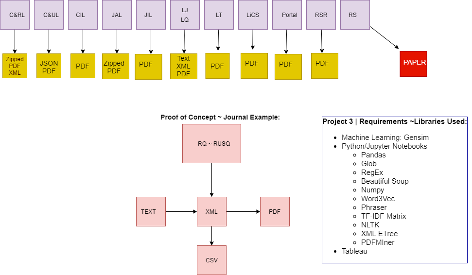

Research Overview
This project provides an early draft and proof of concept for my research work. Eventually, these pages will be expanded and provide visualizations detailing my research findings. To establish proof of concept, in Project 3 we established a data workflow that tests each step in the text processing I expect to use.We used the data from the journals Reference Quarterly,Reference & User Services Quarterly, and Library Quarterly.
For my research, I have identified 10 journals and for each full run, I will compare ngram2s across the volumes looking for associated words related to literacies (academic and information) specifically identifying critical literacies of reading, writing, and using information sources. I will also have tables for ngram3 and for the full citation information for each volume and issue.
My dissertation historicizes the relationship between academic library instruction and writing studies by tracing the evolution of how concepts related to writing from sources, research writing, information literacy, and other library literacies have been written about, theorized, and practiced within library literature, in particular asking how librarians have drawn on concepts, theory, and practices of academic literacies from within Writing Studies in their work.
By examining the relationship between academic library instruction and writing studies, my research explores what factors influenced this development, what conceptual discussions have occurred in the library literature that were ignored or lacked resonance at the time of their publication, and what can be learned from this history. Maureen Goggin recognizes the value of such study, writing “historical studies are important for understanding not only the forces that contributed to the rise of a given discipline and profession but also for understanding its present condition” (63).
Over 15 years ago, Rolf Norgaard proposed that composition instructors and librarians look not at writing and information literacy, but at “writ[ing] information literacy” (125). While critical literacy pedagogy has established important and shared theoretical framing across disciplines, my research in specifically examining the intersections of writing and information literacies within library instruction’s history responds directly to Norgaard’s call.